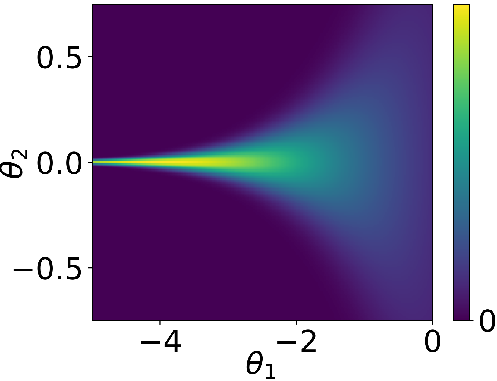
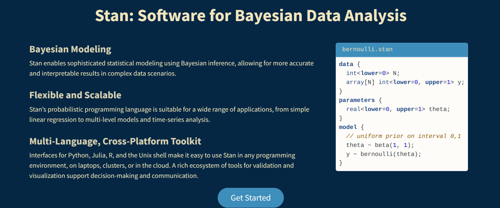

Bayesian modelling
Hamiltonian Monte Carlo and probabilistic programming
Last compiled Friday Apr 11, 2025
Curse of dimensionality
This material is drawn from
Check out these animations by Chi Feng
Motivation
We are interested in calculating expectations of some function \(g\) against the posterior. \[\begin{align*} \int_{\mathbb{R}^d} g(\boldsymbol{\theta}) p(\boldsymbol{\theta} \mid \boldsymbol{y}) \mathrm{d} \boldsymbol{\theta}. \end{align*}\]
The integral is determined by the product of the ``volume’’ of \(g(\cdot)\) and the density.
Curse of dimensionality
As the dimension of the posterior, \(d\), grows, the mass concentrates in a small region, the so-called typical set. The number of regions/directions to consider increases exponentially in \(d\).
If we start at the stationary distribution, most proposals from a random walk Metropolis will fall outside of the typical set and get rejected.
This phenomenon also explains the decrease in performance of numerical integration schemes (quadrature).
Better informed proposals
For differentiable targets, we saw that we can do better than random walk Metropolis–Hastings.
- Idea: use the gradient to make an informed proposal (e.g., in MALA)
- There are two remaining challenges.
- it makes a single step from the current position. But why stop at one?
- the gradient needs not be aligned with the typical set (Betancourt analogy with satellite in orbit).
Hamiltonian Monte Carlo
Hamitonian Monte Carlo borrows ideas from Hamiltonian dynamics.
Consider the evolution over time of a particle characterized by a
- position \(\boldsymbol{\theta} \in \mathbb{R}^d\) along with potential energy \(U(\boldsymbol{\theta})=- \log p(\boldsymbol{\theta} \mid \boldsymbol{y})\)
- an added auxiliary vector \(\boldsymbol{s} \in \mathbb{R}^d\) of momentum (describing mass and velocity) with accompaying kinetic energy \(K(\boldsymbol{s})= -\log p(\boldsymbol{s})\).
Hamiltonian
Write the negative of the log of the joint density as \[H(\boldsymbol{\theta}, \boldsymbol{s}) = -\log p(\boldsymbol{s}) - \log p(\boldsymbol{\theta}) = U(\boldsymbol{\theta}) + K(\boldsymbol{s}).\]
The partial derivatives of the Hamiltonian give the evolution over time of the system: \[\begin{align*} \frac{\mathrm{d} \theta_j}{\mathrm{d} t} = \frac{\partial H}{\partial s_j} &= \frac{\partial K}{\partial s_j}\\ \frac{\mathrm{d} s_j}{\mathrm{d} t}= - \frac{\partial H}{\partial \theta_j} &= - \frac{\partial U}{\partial \theta_j}, \quad j =1, \ldots, d. \end{align*}\]
There is no explicit solution to these differential equations in most settings.
Kinetic energy
The most popular choice of kinetic energy is the Gaussian, \[\begin{align*} K(\boldsymbol{s}) = \frac{1}{2} \boldsymbol{s}^\top \mathbf{M}^{-1}\boldsymbol{s} \end{align*}\] the negative of a mean zero log Gaussian density with positive-definite covariance matrix \(\mathbf{M}.\)
Typically, we take \(\mathbf{M}=\mathrm{diag}\{m_1, \ldots, m_d\}\) diagonal, or else proportional \(\mathbf{M} = m \mathbf{I}_d\).
Properties of Hamiltonian dynamics
The mapping \(T_s\) from time \(t\) at \((\boldsymbol{\theta}(t), \boldsymbol{s}(t))\) to time \(t + \varepsilon\), \((\boldsymbol{\theta}(t + \varepsilon), \boldsymbol{s}(t + \varepsilon))\) satisfies the following properties:
- Reversible: MCMC will thus preserve the invariant target distribution
- Conservation of energy: proposals from Hamiltonian dynamics would lead to acceptance probability of 1.
- Symplecticness/volume preserving: the Jacobian of \(T_s\) is one — no need to calculate it.
A necessary discretization step
There is no explicit solution to the Hamiltonian differential equation. We must move away from continuous time…
- For solving the differential equation numerically, Euler’s method doesn’t work because it does not preserve volume, and this leads to divergences.
Leapfrog integrator
The leapfrog integrator performs a half step for momentum, then does a full step for the position using the updated components, etc.
\[\begin{align*} s_j(t+\varepsilon/2) &= s_j(t) - \frac{\varepsilon}{2} \left.\frac{\partial U(\boldsymbol{\theta})}{\partial \theta_j}\right|_{\boldsymbol{\theta}(t)} \\ \theta_j(t+\varepsilon) &= \theta_j(t) + \varepsilon \frac{s_j(t+\varepsilon/2)}{m_j} \\ s_j(t+\varepsilon) &= s_j(t+\varepsilon/2) - \frac{\varepsilon}{2} \left.\frac{\partial U(\boldsymbol{\theta})}{\partial \theta_j}\right|_{\boldsymbol{\theta}(t + \varepsilon)} \end{align*}\]
Hamiltonian Monte Carlo algorithm
Consider the joint distribution with positions \(\boldsymbol{\theta}\) and momentum variables \(\boldsymbol{s}\), \(p(\boldsymbol{\theta}, \boldsymbol{s}) \propto \exp \{- H(\boldsymbol{\theta}, \boldsymbol{s})\}.\)
We start with a position vector \(\boldsymbol{\theta}_{t-1}\) at step \(t-1\):
- Sample a new momentum vector \(\boldsymbol{s}_{t-1} \sim \mathsf{Gauss}(\boldsymbol{0}_d, \mathbf{M}).\)
- Use Verlet’s (leapfrog) integrator to evolve the state vector for \(L=\lfloor\tau/\varepsilon\rfloor\) steps of size \(\varepsilon\) to get a proposal tuple \((\boldsymbol{\theta}_t^{\star}, \boldsymbol{s}_t^{\star})\)
Hamiltonian Monte Carlo algorithm
- Flip the momentum variable, \(\boldsymbol{s} \mapsto - \boldsymbol{s}.\)
- Metropolis step: if \(U \sim \mathsf{unif}(0,1) <R\), where \[\log R = -H(\boldsymbol{\theta}^{\star}, \boldsymbol{s}^{\star}_{t}) + H(\boldsymbol{\theta}_{t-1}, \boldsymbol{s}_{t-1}),\] set \(\boldsymbol{\theta}_t = \boldsymbol{\theta}_t^{\star}\), else keep the previous value and set \(\boldsymbol{\theta}_t = \boldsymbol{\theta}_{t-1}\).
- Discard the momentum vector
Tuning
Hamiltonian Monte Carlo (HMC) has numerous tuning parameters
- size of the leapfrog step \(\varepsilon\).
- length of the integration time \(\tau\) (or equivalently the number of steps \(L=\lfloor \tau / \varepsilon \rfloor\)).
- too small leads HMC to bear close resemblance to random walk,
- too large leads to wasteful calculations.
- choice of the mass matrix \(\mathbf{M}\) (pre-conditioner obtained during warmup period).
Leapfrog and error
The Störmer–Verlet (leapfrog) integrator is a second order method, so for step size \(\varepsilon\):
- local error \(\mathrm{O}(\varepsilon^3)\) and
- global error of size \(\mathrm{O}(\varepsilon^2)\) (accumulated error over \(L\) steps).
Leapfrog updates one variable at a time, a shear transformation.
Leapfrog step should be \(\mathrm{O}(d^{-1/4})\) (Beskos et al., 2013)
Optimal acceptance rate
In practice, we use a Metropolis step to adjust for the discretization of the system.
- This leads to acceptance rates less than the theoretical value of 1.
- with optimal acceptance rate of \(0.651\) (Beskos et al., 2013); see Neal (2011) for heuristics.
- software like Stan tunes to around 0.8, but can be adjusted in settings.
It’s nuts!
HMC and divergences
In theory, the energy of the Hamiltonian should stay constant, but the numerical scheme leads to small perturbations (hence the rejection step).
- If the value of the Hamiltonian changes too much, this is identified as a divergence. These occur when the geometry of the posterior is heavily constrained (funnel shaped).
- Reparametrization of the model can help improve this: see the Stan manual.
Neal’s funnel
Achieving independence
We have seen that for differentiable posterior \(p(\boldsymbol{\theta} \mid \boldsymbol{y})\), using the gradient information can improve convergence by informing about the direction of the mode.
- Neal (2011) discusses how informally, random walk Metropolis requires \(\mathrm{O}(d^2)\) steps to get an independent draw, compared to \(\mathrm{O}(d^{4/3})\) for MALA.
- HMC scales like \(\mathrm{O}(d^{5/4})\), a notable improvement in performance.
- It however comes at the cost of repeated gradient evaluations (\(L\) by update).
Take-home
- HMC is more efficient than what we have seen, but not a silver bullet: it works very well for not overly complicated models and moderate sample sizes.
- HMC works better than many MCMC, but requires special tuning best left to specialized implementations already available in software.
- Most implementations don’t cover the case of discrete random variables (Nishimura et al., 2020).
Probabilistic programming
There are several languages and interfaces that implement probabilistic programming where the user has only to specify the likelihood and prior.
Historically, Bugs paved the way to practitioners.
It relies on Gibbs sampling (updating one parameter at the time), but is not actively developed. Still the source of many exercises and inspiration for the syntax of other implementations (e.g., Nimble, JAGS).
Stan
The programming language Stan is written in C++ and offers cross-platform interfaces.
Other MCMC software
Stochastic volatility model
Financial returns \(Y_t\) typically exhibit time-varying variability. The stochastic volatility model is a parameter-driven model that specifies \[\begin{align*} Y_t &= \exp(h_t/2) Z_t \\ h_t &= \gamma + \phi (h_{t-1} - \gamma) + \sigma U_t \end{align*}\] where \(U_t \stackrel{\mathrm{iid}}{\sim} \mathsf{Gauss}(0,1)\) and \(Z_t \sim \stackrel{\mathrm{iid}}{\sim} \mathsf{Gauss}(0,1).\)
It is possible to introduce leverage by adding \(\mathsf{Cor}(Z_t, U_t) = \rho.\)
References